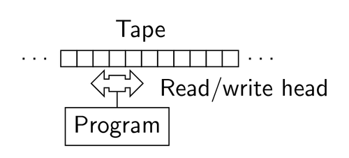
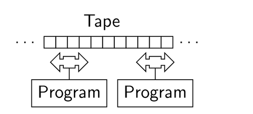

public: True class: center, middle # 共享内存多线程 蒋炎岩 <jyy@nju.edu.cn> 南京大学计算机软件研究所 --- # 本讲概述 > 引子：操作系统是世界上最早的.red[并发]程序之一——操作系统中的几乎一切都是并发的。 > > 理解并发从以下角度入手： > > * 考虑如何在一台物理计算机(想象nemu)上让多份代码“同时”执行，就好像我们可以“同时”玩游戏、听音乐，然后不时看一看后台程序的运行结果？ > * 更进一步，如果有多台物理计算机(多个处理器)呢？ ---- * 线程与并发 * 多处理器编程：从入门到放弃 --- class: center, middle # 线程与并发 --- # 并发 (Concurrency) > Concurrent: existing, happening, or done at the same time. > > In computer science, concurrency refers to the ability of different parts or units of a program, algorithm, or problem to be executed out-of-order or in partial order, without affecting the final outcome. (Wikipedia) 思考题：.green[为什么在这门课(先)讲并发？] --- # 为什么在这门课讲并发？ ---- 因为操作系统是最早的并发程序(之一) * 单处理器、批处理系统没并发什么事 * 在分时系统中，长时间的系统调用可能使整个系统失去响应(`write(fd, buf, 1 TB)`)，因此.red[系统调用运行中途可能被切换] * 操作系统就成了共享内存上的并发程序 ---- 因为多处理器系统、分布式系统的普及 * 单处理器的性能增长遇到瓶颈；大数据对计算量的需求急剧增加 * 我们.red[被迫要写越来越多的并发程序] --- # 简化的顺序计算机模型 Turing Machine: 一个.red[自动机]和一个.red[内存] .center[] .center[(图灵机, Turing Machine)] --- # 计算机模型：NEMU NEMU的代码十分类似Turing Machine的模拟程序(`R`是状态机；`M`是纸带)： ```c void cpu_thread() { CPU_State R; // 寄存器是CPU私有的数据 while (1) { read_mem(R[PC]); // 读内存 decode(); // 本地计算 execute(); // 本地计算 if (...) { read_mem(...) // 根据指令内容读写内存 write_mem(...) } update(R); // 本地计算 } } ``` 内存是处理器之外的一个模块 --- # 并发/并行多线程 单处理器并发 * 每次选择一个程序执行一条指令(在中断驱动下，操作系统选择下次执行的程序) 多处理器并行 * 系统里真的有多个执行部件，它们可以同时执行程序 * 在多台计算机上执行`cpu_thread()`，但共享内存就得到了多线程(多处理器)版本的NEMU .center[] --- # POSIX Threads UNIX为我们提供了线程库(pthreads) * 使用`pthread_create`创建并运行线程 * 使用`pthread_join`等待一个线程结束 ---- 无论系统是单处理器/多处理器，都得到若干共享了当前进程地址空间的.red[线程] * 共享代码：所有线程的代码都来自当前进程的代码 * 共享数据：全局数据/堆区可以自由引用 * 独立堆栈：每个线程有独立的堆栈 --- # threads.h 我们封装了`threads.h`，用于演示 ([threads.h](/static/wiki/os/2019/demos/threads.h)讲解) * `create(f)` - 创建并运行一个线程，执行函数`f` * `join(f)` - 等待所有线程执行结束，然后运行函数`f` ---- 恭喜你，你已经可以玩起多线程编程啦！ * .green[如何相信真的启动了多个线程？] ([hello-mt.c](/static/wiki/os/2019/demos/hello-mt.c)) * .green[如何知道每个线程的堆栈范围和大小？] ([stack-probe.c](/static/wiki/os/2019/demos/stack_probe.c)) * .green[`__thread`变量是如何实现的？] * 迫不及待想来点多线程编程了——比如把你们的Simplex算法实现在3,120,000个计算核心上(天河二号)的LINPACK --- class: center, middle # 多处理器编程：从入门到放弃 --- # 入门 并发：就这么简单！ ---- ```c #include <threads.h> void a() { while (1) { printf("a"); } } void b() { while (1) { printf("b"); } } int main() { setbuf(stdout, NULL); // ??? create(a); create(b); } ``` --- # 共享内存 线程共享代码、数据，拥有独立堆栈 ```c int x; void thread_func() { int y; // 除非指针逃逸，其他线程不可见 x++; // 其他线程直接可见 } ``` ---- 系统中线程的代码是.red[同时]执行 * 可能两个线程同时执行`x++`，那么结果会是什么呢？ --- # 放弃 (0) 如果支付宝程序员这么管理余额： ```c void alipay_deposit(int money) { if (balance >= money) { balance -= money; } } ``` 如果两个线程同时执行`deposit(100)` (`money == 100`)？ * 我们需要.red[原子性] (atomicity), 一段代码执行在多处理器上不被打断 ---- 1960s，大家争先在共享内存上实现原子性(互斥) * 但几乎所有的solution都是.red[错的]，直到[Dekker's Algorithm](https://en.wikipedia.org/wiki/Dekker%27s_algorithm)，只能保证两个线程的互斥 --- # 放弃 (1) 分两个线程，计算1+1+1+…..+1 (共计200000000个1) ```c long sum = 0; void do_sum() { for (int i = 0; i < 100000000; i++) sum++; } void print() { printf("sum = %ld\n", sum); } int main() { create(do_sum); create(do_sum); join(print); } ``` 结果： .float-right[<img src="/static/wiki/os/2019/img/question.jpg" width=150px/>] - `-O0`: 113863902 - `-O1`: 100000000 - `-O2`: 200000000 --- # 放弃 (2) ```c++ int volatile x = 0, y = 0; std::atomic<int> tx, ty; void thread1() { x = 1; // write(x, 1) ty = y; } // read(y) void thread2() { y = 1; // write(y, 1) tx = x; } // read(x) ``` ---- 实验结果(4 x Xeon X7460, 24cores) .float-right[<img src="../static/wiki/os/2019/img/question.jpg" width=150px/>] | x (tx) | y (ty) | 概率 | | ------ | ------ | ----------------------------- | | 0 | 0 | <font color="red">0.2%</font> | | 0 | 1 | 82.3% | | 1 | 0 | 17.5% | | 1 | 1 | <font color="red">0.0%</font> | * 我们需要.red[可见性] (visibility), 写入的值能被其他处理器正确读到 --- # 有没有感到后怕？ ```c void a() { while (1) { printf("a"); } } void b() { while (1) { printf("b"); } } ``` `printf`里有.red[缓冲区]，那它们并发还对么？ -- count: false ---- ``` PRINTF(3) ATTRIBUTES For an explanation of the terms used in this section, see attributes(7). ┌────────────────────────┬───────────────┬────────────────┐ │Interface │ Attribute │ Value │ ├────────────────────────┼───────────────┼────────────────┤ │printf(), fprintf(), │ Thread safety │ MT-Safe locale │ │sprintf(), snprintf(), │ │ │ │vprintf(), vfprintf(), │ │ │ │vsprintf(), vsnprintf() │ │ │ └────────────────────────┴───────────────┴────────────────┘ ``` --- class: center, middle # 明明白白放弃 --- # 你妈的，为什么？ .float-right[<img src="../static/wiki/os/2019/img/why.jpg" width=200px/>] `x = 1`会经历：C代码 → 编译器 → 操作系统 → 处理器 → 缓存 → 内存 * C代码 * → 优化 (编译器) → 顺序的丧失 * → 中断 (操作系统) → 多处理器 & 缓存 (计算机硬件) → 原子性的丧失 * 缓存 & 乱序 (计算机硬件) → 可见性的丧失 --- # 编译器干了什么好事？ .blue[顺序的丧失]：允许.red[源代码中“内存访问”指令不再按顺序甚至不再出现] 编译器.red[优化]改变内存访问的顺序和频率，即对于`f()`的执行，编译优化保证优化后`f_opt()`执行的.red[效果]等价 * 在值能被确定的前提下，`R(x)`可能被删除 * 在未来`x`会被覆盖的前提下，`W(x)`可能被删除 * `W(x)`, `W(y)`可以交换顺序 ---- ```c for (int i = 0; i < N; i++) sum++; ``` 可以翻译成 * `tmp = sum; for (int i = 0; i < N; i++); sum = tmp + N;` * `tmp = sum; sum = tmp + N;` --- # 防止编译器干好事 C语言：控制编译器行为 * 阻止编译优化 ```c void delay() { for (volatile // !!! int i = 0; i < DELAY_COUNT; i++) ; } ``` * 保证内存访问(指令)的顺序 ```c extern int x; #define barrier() asm volatile ("":::"memory") void foo() { x++; barrier(); // no reordering here x++; // 阻止x的访问被合并 y++; } ``` --- # 操作系统干了什么好事？ .blue[原子性的丧失]：指令序列可以在任意时刻被.red[中断]，然后操作系统切换到其他线程执行 C语言中的一条语句，可能非原子地执行(`x++`)，多条语句之间更有可能被其他线程抢占： ```assembly ===Thread 1=== ===Thread 2=== movl (x), %eax . addl $1, %eax . . // interrupt & context switch . movl (x), %eax . addl $1, %eax . mov %eax, (x) . // interrupt & context switch mov %eax, (x) . ``` --- # 防止操作系统干好事 互斥(mutual exclusion)：实现原子性 ---- 我们希望实现两个函数： ```c stop_the_world(); ... // critical section, 临界区 resume_the_world(); ``` * 执行`stop_the_world()`之后，整个系统中所有的其他线程都暂停 * 执行`resume_the_world()`后，系统中其他线程才恢复 这样就可以保证我们安静地完成`deposit()`或者`sum++`了 --- # 计算机硬件干了什么好事？ .blue[可见性的丧失]：缓存 & 乱序执行 缓存缺失需要等很久数据，但考虑如下情况： ```assembly movl %eax, (x) # write(x), cache miss movl (y), %ebx # read(y), 依然可以执行 ... ``` 现代处理器做了一个非常激进的决定： * .red[如果两条指令没有数据依赖关系，就让它们并行执行好了！] * 这导致了内存读写实际被.red[乱序] * 所以指令执行的结果可以非常令人费解；不可线性化：并发程序的执行结果不等价于指令按照某个顺序执行的结果 * [Further reading](https://preshing.com/20120930/weak-vs-strong-memory-models/) --- # 防止计算机硬件干好事 .center[指令集来帮忙] .center[(本课程内容，之后详细介绍)] --- # 小结 共享内存并发编程真正需要面对的难题： * 内存访问不保证按.red[顺序]发生 (order) * 代码的.red[原子性]随时被破坏 (atomicity) * 执行过的指令不能保证在多处理器间.red[可见] (visibility) ---- 所以，写并发程序是个非常.green[令人头秃]的工作 --- # 给自己一个放弃的理由 论文告诉我们：.red[不要给“干好事”任何的机会] > W. Xiong, et al. [Ad hoc synchronization considered harmful](https://www.usenix.org/events/osdi10/tech/full_papers/Xiong.pdf). In *Proceedings of OSDI*, 2010. * 老老实实使用线程安全API、并发控制API (互斥锁、信号量、条件变量等)，写出你能读得懂、能说明得了正确性的代码 * 这是一门.red[system]课程，因此在此放弃 ---- .float-right[<img src="../static/wiki/os/2019/img/taomp.jpg" width=150px/>] 还不放弃？ * 并发算法是非常有趣(很难)的研究问题！ * 请戳右边的书